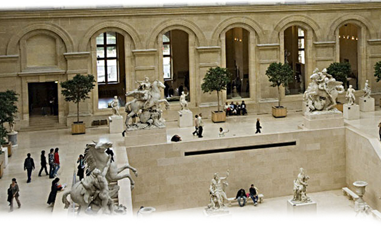

Коллекция Лувра, продолжение
Крыло Денон (Denon)
Под землей
В галереях к югу и востоку от пирамиды Лувра собрана итальянская скульптура раннего Возрождения: среди экспонатов «Мадонна с младенцем» 15 в. флорентийца Донателло (1386-1466). Прежде чем подниматься наверх, стоит пройтись по галереям с произведениями этрусков и римлян. Экспозиция тянется до цокольного этажа и включает в себя замечательную мозаику из Антиохии, которая ныне принадлежит Турции. В зале 18 вы увидите этрусский саркофаг 6 в. до н. э. из Черветери: изображение супружеской пары собрано из нескольких тысяч разрозненных глиняных кусочков. Поднявшись по мраморным ступеням лестницы Дарю (escalier Daru), вы поразитесь возвышенному благородству Ники Самофрокийской: крылатая богиня победы словно бы приготовилась взлететь над лестницей. Это ошеломляющее, захватывающее дух зрелище. Статую 3 в. до н. э. нашли на неприметном островке на севере Эгейского моря. Неведомый скульптор изваял ее на острове Самофракия в 305 г. до н. э. Сойдя с лестницы Дарю и обойдя пьедестал Ники справа, вы попадете на выставку великолепного собрания итальянской живописи. Имейте в виду, что залы здесь понемногу перестраивают и переоборудуют: «Мона Лиза» раньше была в зале 3, а в 2005 г. она находилась в зале 13. Чтобы подготовиться к восприятию загадочного шедевра Леонардо, пройдитесь по итальянским галереям и проследите, как вырабатывалось понятие о перспективе и как происходило становление портрета. Зал 5 - это начало длинного узкого коридора, удачно, ничего не скажешь, названного Великой галереей (Grande Galerie): тут вы обнаружите крепкого «Святого Себастьяна», утыканного стрелами. Себастьяна написал Андреа Мантенья (1431-1506), последователь флорентийского архитектора Брунелески, а тот среди прочего еще и написал исчерпывающий трактат о перспективе. Учась у этого зодчего, Мантенья одним и первых стал строить перспективное изображение с четко обозначенной точкой схождения.
Затем следуют четыре картины тот самого возрожденческого человека – живописца-инженера-изобретателя-анатома Леонардо да Винчи (1452-1519). Его таинственный «Святой Иоанн Креститель» соседствует с безупречно благочестивыми работами: вот «Мадонна в скалах» 1483 г. вроде такая же, как прочие Мадонны, разве что с необычайно гармоничным - пирамидальным - расположением изображенных. Присмотритесь к «Прекрасной Ферроньере» - этот портрет написан за десятилетие до «Моны Лизы», так что нам будет с чем сравнивать, когда вы наконец встретитесь с самой «Моной». Продолжая свой путь вдоль коридора, вы пройдете мимо картин Рафаэля и Джузеппе Арчимбольдо - этот Арчимбольдо любил забавляться составлением человеческих физиономий из цветов, овощей и плодов.
А потом вы окажетесь в гуще толпы жаждущих пробиться к самой прославленной картине на свете, к этой самой Моне Лизе (на самом деле картина называется «La Gioconda» («Джоконда»), а французы говорят «Ла Жоконд» ). Полно охраны, везде всякие загородки и барьеры - словом, вы сразу же поймете, что угодили на некое священное место и вроде как собираетесь поклонится некоей святыне. И в каком-то смысле так оно и есть: эту небольшую картину любил и сам Леонардо, он отличал ее от других своих работ. После Франциска I, она принадлежала многим правителям Франции, а Наполеон держал ее в своей спальне. Не миновали ее и беды: в 1911 г. один итальянский националист украл из ее Лувра (картину через два года обнаружили в одной флорентийской гостинице), а в 1956 г. Ее обливали кислотой, - к счастью, пострадал только нижний край холста. Жене флорентийского миллионера Франческо дель Джокондо, согласившейся в 1503 г. позировать Леонардо, было тогда 24 года; есть историки, считающие, что портрет написан уже после смерти женщины. Как бы то ни было, да Винчи обессмертил, эту молодую даму, прибегая среди прочего к изобретенному им приему сфумато: яркие детали сочетаются с густыми мазками. И даже в зале, битком набитом искателями прекрасного, трудно отделаться от впечатления, что она глядит именно на вас и видит вас насквозь.
А потом вы можете перейти к испанской живописи или же вернуться назад, к итальянским живописцам, либо предпочесть знакомство с итальянской графикой. Выбрав последний вариант, вы должны пройти мимо небольшого кафе на лестничной клетке и попасть в один из трех больших залов, где висят большие картины французских художников 19 в. Среди крупногабаритных полотен собрания - несколько из наиболее известных, вызывавших и вызывающих и по сей день самые ожесточенные споры. В зале 77 – страшная картина 1819 г.: «Плот «Медуза»» Теодора Жерико (1791-1824). Произведение знаменовало собой коренной переворот в искусстве: впервые масштабный холст отображал не далекую историю, но совсем недавнее и все еще памятное событие. На создание этой картины Жерико вдохновило печальное сообщение из газетной хроники. В нем говорилось, что французское торговое судно потерпело крушение, уцелевшие спаслись на плоту, но у них не было никаких припасов. Пошли слухи о людоедстве и душегубстве. Жерико расспрашивал выживших, рисовал трупы в моргах и так изобразил несчастье, что у него вышло обвинение в адрес властей. На полотне изображено состояние потерпевших крушение на момент их обнаружения. Это, несомненно, романтизм, но нарочито лишенный чего-либо героического: несчастные люди сливаются в беспорядочное скопище зеленоватых теней.
И Эжен Делакруа (1798-1863), решив написать «Свободу, ведущую народ», пошел против устоявшихся художественных мерок, выводя на первый план и даже делая героями хулиганских уличных мальцов и бунтующих пролетариев. Хотя его самого и не затянули «Три славных дня» - как называют стремительную революцию 1830 г., опрокинувшую самодержавие Карла X и заменившую его парламентарной монархией, - художник счел своим долгом увековечить это событие. Он написал аллегорию свободы: женщина с обнаженной грудью и винтовкой в руке, развевающийся флаг над республиканцами на баррикадах, а кругом валяются трупы других французов. В лицах - ни особенной красоты, ни какого-нибудь дивного отблеска веры, скорее отчаянная решимость и еще «неумытость» - чумазые, в общем, физиономии. Но это изображение свободы настолько совпало с настроениями в обществе, что аллегория Делакруа многократно воспроизводилась в виде статуй и тиражировалась на монетах.
В зале 76 на главном месте тяжеловесный «Брак в Кане» Паоло Веронезе (1528-1588) - картина богатая, напоминающая о «Христе в доме Левин» кисти живописца Венециано (венецианская картина, как полагается, находится в Венеции). Оба художника включили в число изображенных персонажей неприглядных любителей выпить, что дошло до папы, и тот лично интересовался у Веронезе, зачем это живописец написал бесчинное сборище пьяных гуляк, карликов и животных на картине, как-никак притязающей на высокое достоинство святого образа. Столь же огромные и такие же «перенаселенные» картины дожидаются вас в зале 75, но на сей раз это творчество французского классициста Жака-Луи Давида (1748-1825) - именно он произвел на свет Коронацию Наполеона, чтобы увековечить столь чреватое политическими последствиями событие, случившееся 2 декабря 1804 г. Этот важный для всей его последующей карьеры ход Давиду удался как нельзя лучше: он не стал писать Наполеона вырывающим корону из рук папы Пия VII, чтоб собственноручно водрузить ее на свою голову, но предпочел запечатлеть более романтичный момент. Он изобразил новоиспеченного императора, который, воздев корону горе, обращается к своей супруге Жозефине. Давид умел оставаться на плаву: он занимал высокий пост но художественной части при революционном правительстве, дважды перенес ссылку, а потом стал, одним из признанных и процветающих художников при Наполеоне. Из его учеников прославился Жан-Огюст-Доминик Энгр (1780-1867): несколько замечательных портретов, написанных Энгром, можно увидеть в этом же зале.
Цокольный этаж
Спустившись вниз, вы, на уровне земли, попадете на постоянную выставку итальянской скульптуры, заканчивающуюся в зале 4, где выставлены кропотливо извлеченные из мраморных глыб в 1513-1515 гг. «Рабы» Микеланджело ( 1475-1564), который, должно быть, немало дней провел перед мраморными брусками, высматривая сокрытые внутри них формы. Скульптуры, которые Микеланджело сумел в конечном счете высвободить из косного камня, поражают откровенным эротизмом мужского тела. Немалые объемы каменных заготовок остались нетронутыми - решение, что и говорить, спорное, но как раз такими, примерами вдохновлялся Роден и многие другие мастера, жившие во времена, более близкие к нашим.
Вышеперечисленные маячки луврского собрания - не более чем кончик верхушки гигантского айсберга. Вы увидите стены, где буквально живого места нет: шедевры висят так густо, что кажется, туг они вместо обоев: Фра Анджелико, Боттичелли, Гольбейн, Хальс, Брейгель, Эль Греко, Мурильо, Буше и Караваджо - это «Успение Богоматери» сразу же бросается в глаза в Гранд-Галери (Grande Galerie) - вот лишь очень немногие из самых прославленных имен; а еще есть такие в миг поражающие чудеса, как величественная «Пьета» («Оплакивание Христа») Ангеррана Картона (15 в.). Другие собрания угодят самым тонким вкусам искушенных ценителей, таковы, к примеру, образцы французской мебели Грандиозность изделий, произведенных в 17 и 18 вв. Буллем и Рьезенером, порадуют обожателей пышного убранства.
Каруэель-дю-Лувр (Carrousel du Louvre)
Подземный торговый комплекс с опрокинутой стеклянной пирамидой в центре возник в начале 1990-х гг., когда осуществлялась программа обновления Лувра. Приглядывает за этим комплексом турбюро региона Иль-де-Франс. Кроме киосков и магазинов, под землей расположены подиумы для показа мод (что ж, Париж остается Парижем), аудитория (конференц-зал) и огромный паркинг с гаражом. На время ланча посетители музея торопятся попасть во внутренний дворик комплекса, где, как и во всем мире, становится все больше заведений фаст-фуд. В отличие от многих других магазинов в городе, торговля здесь не прекращается ни на минуту, что бывает особенно удобно, если требуется срочно купить подарок или сувенир.